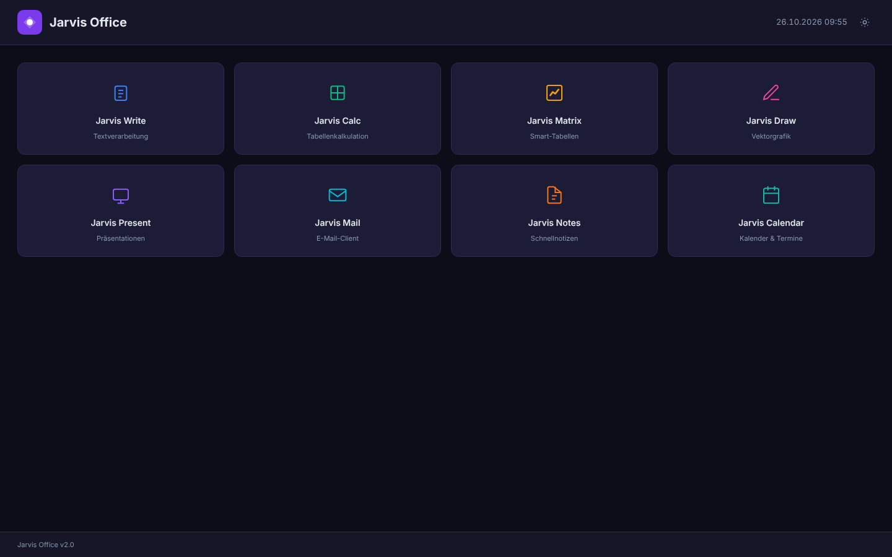

Dein persönliches Büro.
Ohne Account. Ohne Internet.
Write, Calc, Calendar, Notes, Draw und mehr — komplett im Browser, komplett offline. Nichts verlässt dein Gerät.
Jarvis Office öffnen →
Das Problem mit Cloud-Office-Tools
Sie funktionieren offline nicht
Die meisten Browser-Office-Apps zeigen einen Ladekreisel, sobald kein WLAN da ist. Jarvis Office läuft auch im Zug, im Keller, ohne Router.
Sie wissen zu viel
Account, Tracking, Cloud-Sync — jedes Dokument wandert durch fremde Server. Manchmal ist etwas einfach privat. Jarvis Office speichert lokal, fertig.
So funktioniert es
App öffnen
Läuft direkt im Browser — kein Install, kein Konto. Oder als Debian-Paket für Linux als Desktop-App.
Arbeiten wie gewohnt
8 Module: Textverarbeitung, Tabelle, Kalender, Notizen, Zeichnen, Präsentation, Matrix, Mail.
Alles bleibt lokal
Daten gehen in den Browser-Speicher des Geräts. Tab schließen, wieder öffnen — alles noch da.
Was v2 besser macht
| Problem in v1 | Was v2 tut | Status |
|---|---|---|
| App startete gar nicht — ReferenceError beim Laden aller 8 Module | Skript-Ladereihenfolge korrigiert, alle Module starten zuverlässig | Behoben |
| Screen-Reader-Nutzer konnten nicht navigieren — 8 WCAG-Verstöße | WCAG AA: Kontrast, ARIA-Rollen, Landmarks, Button-Labels | Behoben |
| Farben im Code hartcodiert, kein Design-System | Vollständiges CSS-Token-System, alle Werte aus Variablen | Behoben |
8 Module in einer App
Write
WYSIWYG-Editor, Auto-Save, Export
Calc
Tabelle mit Formeln: SUM, AVG, MAX
Calendar
Monat / Woche / Tag, Termin-CRUD
Notes
Schnellnotizen, Pin, Volltextsuche
Matrix
Smart-Tabelle mit Spaltentypen
Draw
Freihand-Canvas, Formen
Present
Folien-Editor, HTML-Export
Lokaler E-Mail-Client
Preis
Kein Abo. Kein Konto. Keine Überraschungen.
- Alle 8 Module
- Alle Daten lokal
- Open Source
- Debian-Paket für Linux
Häufige Fragen
Funktioniert es ohne Internet?
Ja. Die App ist reines HTML, CSS und JavaScript. Nach dem ersten Laden braucht sie keine Netzwerkverbindung.
Wo werden meine Daten gespeichert?
Im localStorage des Browsers auf dem Gerät. Nichts verlässt das Gerät. Kein Server, kein Sync. Wichtige Dokumente regelmäßig exportieren — Browser-Daten löschen löscht auch den Inhalt.
Kann ich Dateien aus Google Docs oder Notion importieren?
Noch nicht. Write exportiert HTML. Import aus anderen Tools ist auf der Roadmap.
Funktioniert es auf dem Smartphone?
Das Layout passt sich an. Editor und Calc funktionieren. Draw und Present sind auf dem Desktop besser. Eine native App gibt es noch nicht.
Gibt es eine Desktop-App?
Ja — das Debian-Paket verpackt Chromium im --app-Modus für eine native Optik auf Linux. macOS und Windows sind in Planung.
Jarvis Office ist kostenlos und läuft sofort.
Keine Anmeldung. Keine E-Mail. Keine Karte.
Jetzt starten →